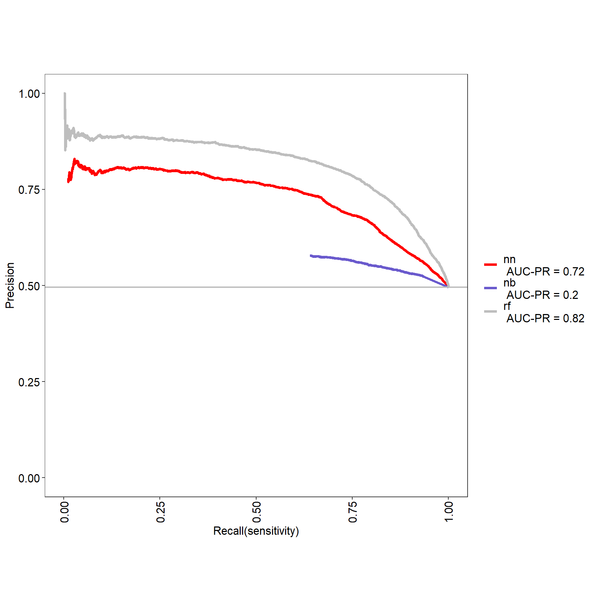

Chapitre 12 Machine learning supervisé et NLP
les techniques de machine learning supervisées ont pour but de trouver une fonction f qui associe une variable y, à un ensemble de variables x. Leur évaluation se fait en examinant la qualité de prédiction sur un échantillon nouveau.
12.1 Le principe et ses applications
Les méthodes de machine learning, notamment celles qu’on appele classificateurs, peuvent être utile pour résoudre des problèmes de prédiction d’une variable à partir du contenu textuel.
L’exemple évident est quand on veut prédire la note à partir de commentaire du consommateur. Dans le même domaine on peut désirer connaitre ce qui détermine l’utilité d’un tel commentaire. Pour des données sociales on s’intéressera par exemple à la popularité d’un tweet. Et dans des usages plus sophistiqués on peut imaginer construire des catégories spécifiques , par exemple le caractère phatique ou nom d’un contenu, le ton employé. Dans ce cas, il faudra au préalable annoter manuellement un échantillon de ces contenus pour développer le classificateur et l’employer opérationnnement pour le codage de l’ensemble du corpus.
e processus va se dérouler selon les étapes suivantes
1 - on constitue les corpus de donnée. Un fichier d’entrainement et un de test. 2 - Le fichier d’entrainement est labellisé, etiqueté, annoté. Ce sont des termes équivalents qui désignent un processus plus ou moins objectif qui qualifie une chaine de caractère. Cette annotation peut être exogène ou endogène. Une annotation endogène est un jugement sur le contenu qui doit être annoté. Contient-il des élément toxiques ou non ?
Tel tweet est positif, tel autre ne l’est pas, tel tweets proteste, tel autre informe. Telle chaine de caractère est associée à un nombre de retweet élevé, tel autre à un nombre bas. 2 - on nettoie le texte, on limite les signes candidats
inspiré de https://www.hvitfeldt.me/blog/binary-text-classification-with-tidytext-and-caret/
12.2 Une première application
Dans cette analyse, l’objectif va être de comprendre quel sont les mots, ou les expressions, qui sont determinent la popularité des tweets de Trump.
L’objectif va être de prédire à partir des termes, les chances qu’un tweet soit largement retwitté, et de comprendre quels sont les éléments qui contribuent le plus à expliquer la qualité des prédictions.
On va employer caret, qui est un cadre général pour mener des projets de machine-learning, et de tidytext pour manipuler le corpus de tweets.
#library(caret)
df<-read.csv("./data/TrumpTwitterArchive01-08-2021.csv")
df$Year<-str_sub(df$date,1,4)12.2.1 Constituer le dataset
On prend les données du mandat (après 2016) pour ne pas mettre de confusion et rester dans un domaine homogène. (On peut déjà envisager une extension en jouant du temps, et en répétant l’analyse selon une fenêtre de temps - on reste dans le code statique)
On classe les tweets en deux catégories : ceux avec beaucoups de retweets et ceux qui en on moins. On prend le critère de la médiane pour avoir des annotations équilibrées. On envisagera plus tard ue approche en terme de régression. La dichotomisation est ici une première approche, un première approximation.
On choisit de se concentrer sur la période présidentielle pour que le nombre de followers soit à peu près constant.
#sélection du corpus
data<-df %>%
select(text, retweets,Year) %>%
filter(Year>2018)
#calcul de la mediane du nombre de retweets
median<-round(median(data$retweets),1)
# codage des tweets au dessus et en dessous de la médiane
data<-data %>%
mutate(retweets_cl=ifelse(retweets>median, "yes","no"))
#représentatio de la distribution
ggplot(data, aes(retweets))+
geom_histogram(binwidth = 0.1)+
theme_minimal()+
labs(title=paste0("médiane = ",median))+
scale_x_log10()12.2.2 On va nettoyer le texte
- supprimer les liens
- identifier les ngrams
- éliminer des stopword
- éliminer les termes utilisés moins de k fois (ce sera 20)
- on crée un tableau dfm en calculant les tf-idf ( on pondère la préquence d’un terme par l’inverse de la fréquence des documents dans lesquels il apparait)
#nettoyage des données
##les liens
data_clean <- data %>%
mutate(top = retweets_cl,
text = str_replace_all(text, " ?(f|ht)tp(s?)://(.*)[.][a-z]+", "")) %>%
select(id, top, text)
## les stop_word
data_counts <- map_df(1:3,
~ unnest_tokens(data_clean, word, text,
token = "ngrams", n = .x)) %>%
anti_join(stop_words, by = "word") %>%
count(id, word, sort = TRUE)
## mots assez frequents
words_10 <- data_counts %>%
group_by(word) %>%
summarise(n = n()) %>%
filter(n >= 30) %>%
select(word)%>%drop_na()
#we will right-join this to our data.frame before we will calculate the tf_idf and cast it to a document term matrix.
data_dtm <- data_counts %>%
right_join(words_10, by = "word") %>%
bind_tf_idf(word, id, n) %>%
cast_dtm(id, word, tf_idf)
#We create this meta data.frame which acts as a intermediate from our first data set since some tweets might have disappeared completely after the reduction.
meta <- tibble(id = as.character(dimnames(data_dtm)[[1]])) %>%
left_join(data_clean[!duplicated(data_clean$id), ], by = "id")12.2.3 caret sur la scène
On commence à employer les fonction de caret qui permettent de distinguer les sets d’entrainement et de test, mais aussi, de tester l’efficacité des combinaisons d’hyper-paramètres propres à chaque modèle. Caret donne accès à plusieurs dizaienes de modèles différents. Voir : xxx
Nous allons tester trois types de modèles classiques : un naive bayes qui est le classique de la classification textuelle, un simple réseau de neurones. nnet. et un outil très populaire de Random forest.
les données du processus d’apprentissage. Le corpus est partitionné en un corpus d’entrainement et un corpus de texte.Le processus d’apprentissage est controllé par une méthode de crossvalidation en trois blocs.
trainIndex <- createDataPartition(meta$top, p = 0.7, list = FALSE, times = 1) #on partitionne
data_df_train <- data_dtm[trainIndex, ] %>% as.matrix() %>% as.data.frame() #on definit le training set
data_df_test <- data_dtm[-trainIndex, ] %>% as.matrix() %>% as.data.frame() #on définit le test set
response_train <- meta$top[trainIndex] #on définit l'annotation
trctrl <- trainControl(method = "cv",5, classProbs=TRUE, savePredictions = TRUE) # on définit la stratégie d'entrainement. Ici on utilise une méthode de cross validation fondée sur un découpage en 5 échantillons. 12.2.4 Un modèle naive bayes
Le modèle naive bayes est populaire car simple. Il calcule une probabilité conditionnelle : celle d’avoir un succès (s) en fonction d’une série de n termes \(t_{i}\) .
\[p(S\mid t_{1},...,t_{n}) =p(S)\frac{p(t_{1},...,t_{n}\mid S)}{p(t_{1},...,t_{n})} \] On retrouve la très classique équation de Bayes. En faisant l’hypothèse de l’indépendance des probabilités conditionnelles, et en négligeant le numérateur, elle se simplifie sous la forme suivante. \(c\) est une constante d’échelle, et la probabilité a priori d’être un succès est pondérée par le produit des probabilité conditionnelle d’observer le terme \(t_{i}\) sachant que le tweet est un succès.
\[p(S\mid t_{1},...,t_{n}) =\frac{1}{c}p(S) \prod_{x = i}^{n} p(t_{i}\mid S)\]
On entraine le modèle avec un lissage de Laplace[https://towardsdatascience.com/laplace-smoothing-in-na%C3%AFve-bayes-algorithm-9c237a8bdece) pour éviter le problème des probabilités nulles qui résultent du fait qu’un mot, peut ne pas appartenir à l’ensemble d’entrainement.
nb_mod <- train(x = data_df_train,
y = as.factor(response_train),
method = "naive_bayes",
trControl = trctrl,
tuneGrid = data.frame(laplace = 1,
usekernel = FALSE,
adjust = FALSE))
nb_mod## Naive Bayes
##
## 13173 samples
## 2861 predictor
## 2 classes: 'no', 'yes'
##
## No pre-processing
## Resampling: Cross-Validated (5 fold)
## Summary of sample sizes: 10539, 10539, 10538, 10538, 10538
## Resampling results:
##
## Accuracy Kappa
## 0.5918174 0.1846606
##
## Tuning parameter 'laplace' was held constant at a value of 1
## Tuning
## parameter 'usekernel' was held constant at a value of FALSE
## Tuning
## parameter 'adjust' was held constant at a value of FALSEExaminons les résultats. La précision est de 0.59, autrement dit on prédit correctement les succès et les échecs dans 59% des cas, une prédiction aléatoire est de 50%, compte-tenu du caractère bien balancé de notre échantillon d’apprentissage. L’indice kappa est un indice de concordance qui compare la répartition des classes par rapport à une répartition aléatoire. Sa valeur ici est plutôt faible.
la qualité interne n’est pas suffisante, on va donc évaluer le modèle ( ou clafficateur) en prédisant les valeurs sur de l’échantillon test.
## laplace usekernel adjust Accuracy Kappa AccuracySD KappaSD
## 1 1 FALSE FALSE 0.5918174 0.1846606 0.005244401 0.01047934nb_pred <- predict(nb_mod,
newdata = data_df_test, prob=TRUE)
nb_cm <- confusionMatrix(nb_pred, as.factor(meta[-trainIndex, ]$top))
nb_cm## Confusion Matrix and Statistics
##
## Reference
## Prediction no yes
## no 1531 880
## yes 1316 1918
##
## Accuracy : 0.611
## 95% CI : (0.5981, 0.6237)
## No Information Rate : 0.5043
## P-Value [Acc > NIR] : < 2.2e-16
##
## Kappa : 0.2229
##
## Mcnemar's Test P-Value : < 2.2e-16
##
## Sensitivity : 0.5378
## Specificity : 0.6855
## Pos Pred Value : 0.6350
## Neg Pred Value : 0.5931
## Prevalence : 0.5043
## Detection Rate : 0.2712
## Detection Prevalence : 0.4271
## Balanced Accuracy : 0.6116
##
## 'Positive' Class : no
## Pour être concrêt pensons aux tests covid. Ils peuvent rendre compte de la présence du virus à raison, ce sont les vrais positifs et symétriquement rendre compte de l’absence de trace virale: les vrais négatifs. Ce sont les prédictions correctes. Les prédictions incorrecte sont de deux types : dans le premier on annonce une contamination alors qu’il n’y en a pas : ce sont les faux positifs. Ils alertent sans raison et peuvent obliger un sujet sain à s’isoler. Leurs symétriques sont les faux négatifs : ils annoncent que le virus est absent alors qu’il est tapi dans nos cellules. Les deux erreurs n’ont pas le même poids : la première génère de fausses peurs, la seconde la maladie.
Les indicateurs de qualité du modèle sont calculés à partir du tableau de contingence suivant.
Réalité
Echec SuccèsPrédiction
Echec TN FP
Succès FN TP
- la précision (accuracy) représentent le % de bonnes prédictions : Accuracy=TP+TN/TP+TN+FP+FN.
- le recall ( ousensibility) : TPR=TP/TP+FN (sensitivity/ recall)
- TNR=TN/TN+FP (specificity)
- PPV=TP/TP+FP (precision/ positive predictive value)
- NPV=TN/TN+FN (negative predictive value)
- Informedness=TPR+TNR-1
- Markedness=PPV+NPV-1
12.3 Passons à un réseau de neurones et un RF
12.3.1 neuralnetwook
##rdf
trctrl <- trainControl(method = "cv", 3,classProbs=TRUE, savePredictions = TRUE)
model_grid <- expand.grid(
mtry = 20 # mtry specified here
,splitrule = "gini"
,min.node.size = 20
)
ranger_mod <- train(x = data_df_train,
y = as.factor(response_train),
method = "ranger",
trControl = trctrl,tuneGrid = model_grid,
importance="impurity")## Growing trees.. Progress: 67%. Estimated remaining time: 15 seconds.
## Growing trees.. Progress: 66%. Estimated remaining time: 15 seconds.
## Growing trees.. Progress: 67%. Estimated remaining time: 15 seconds.
## Growing trees.. Progress: 39%. Estimated remaining time: 49 seconds.
## Growing trees.. Progress: 77%. Estimated remaining time: 18 seconds.## mtry splitrule min.node.size Accuracy Kappa AccuracySD KappaSD
## 1 20 gini 20 0.7749934 0.5501054 0.006563857 0.01308362ranger_pred <- predict(ranger_mod,
newdata = data_df_test, prob=TRUE)
ranger_cm <- confusionMatrix(ranger_pred, as.factor(meta[-trainIndex, ]$top))
ranger_cm## Confusion Matrix and Statistics
##
## Reference
## Prediction no yes
## no 2180 563
## yes 667 2235
##
## Accuracy : 0.7821
## 95% CI : (0.7711, 0.7928)
## No Information Rate : 0.5043
## P-Value [Acc > NIR] : < 2.2e-16
##
## Kappa : 0.5643
##
## Mcnemar's Test P-Value : 0.003315
##
## Sensitivity : 0.7657
## Specificity : 0.7988
## Pos Pred Value : 0.7948
## Neg Pred Value : 0.7702
## Prevalence : 0.5043
## Detection Rate : 0.3862
## Detection Prevalence : 0.4859
## Balanced Accuracy : 0.7823
##
## 'Positive' Class : no
## ##nn
trctrl <- trainControl(method = "cv", 3,classProbs=TRUE, savePredictions = TRUE)
nnet_mod <- train(x = data_df_train,
y = as.factor(response_train),
method = "nnet",
trControl = trctrl,
tuneGrid = data.frame(size = 2,
decay = 0.001),
MaxNWts = 15000, importance="impurity")## # weights: 5727
## initial value 6595.145896
## iter 10 value 4263.945550
## iter 20 value 2722.265759
## iter 30 value 2287.497303
## iter 40 value 2006.802644
## iter 50 value 1808.268813
## iter 60 value 1662.489980
## iter 70 value 1577.450484
## iter 80 value 1543.618040
## iter 90 value 1507.127942
## iter 100 value 1477.934694
## final value 1477.934694
## stopped after 100 iterations
## # weights: 5727
## initial value 6329.790523
## iter 10 value 5486.595431
## iter 20 value 4326.998789
## iter 30 value 2604.610663
## iter 40 value 1933.675116
## iter 50 value 1475.067023
## iter 60 value 1261.763428
## iter 70 value 1138.893026
## iter 80 value 1039.801379
## iter 90 value 986.882715
## iter 100 value 951.148867
## final value 951.148867
## stopped after 100 iterations
## # weights: 5727
## initial value 6290.557932
## iter 10 value 5047.523814
## iter 20 value 3365.279376
## iter 30 value 2476.541269
## iter 40 value 2126.268015
## iter 50 value 1823.316281
## iter 60 value 1698.347647
## iter 70 value 1697.793436
## iter 70 value 1697.793424
## iter 70 value 1697.793419
## final value 1697.793419
## converged
## # weights: 5727
## initial value 9536.840093
## iter 10 value 9085.718838
## iter 20 value 8121.131963
## iter 30 value 7342.864843
## iter 40 value 6871.762288
## iter 50 value 6442.312919
## iter 60 value 5696.964973
## iter 70 value 4967.174932
## iter 80 value 4431.369645
## iter 90 value 3985.407644
## iter 100 value 3740.458677
## final value 3740.458677
## stopped after 100 iterationsnnet_pred <- predict(nnet_mod,
newdata = data_df_test, prob=TRUE)
nnet_cm <- confusionMatrix(nnet_pred, as.factor(meta[-trainIndex, ]$top))
nnet_cm## Confusion Matrix and Statistics
##
## Reference
## Prediction no yes
## no 2267 1103
## yes 580 1695
##
## Accuracy : 0.7019
## 95% CI : (0.6897, 0.7138)
## No Information Rate : 0.5043
## P-Value [Acc > NIR] : < 2.2e-16
##
## Kappa : 0.4027
##
## Mcnemar's Test P-Value : < 2.2e-16
##
## Sensitivity : 0.7963
## Specificity : 0.6058
## Pos Pred Value : 0.6727
## Neg Pred Value : 0.7451
## Prevalence : 0.5043
## Detection Rate : 0.4016
## Detection Prevalence : 0.5970
## Balanced Accuracy : 0.7010
##
## 'Positive' Class : no
## 12.3.2 multilayer
trctrl <- trainControl(method = "cv", 3 ,classProbs = TRUE)
neuralGrid <-expand.grid(
layer1 = 3,
layer2 = 3,
layer3 = 0,
decay=0.0005
)
neural_mod <- train(x=data_df_train,y = response_train,
method = "mlpWeightDecayML",
tuneGrid = neuralGrid, # cannot pass parameter hidden directly!!
trControl = trainControl(method = "none"))
neural_pred <- predict(neural_mod,
newdata = data_df_test, prob=TRUE)
neural_cm <- confusionMatrix(neural_pred, as.factor(meta[-trainIndex, ]$top))
neural_cm## Confusion Matrix and Statistics
##
## Reference
## Prediction no yes
## no 0 0
## yes 2847 2798
##
## Accuracy : 0.4957
## 95% CI : (0.4825, 0.5088)
## No Information Rate : 0.5043
## P-Value [Acc > NIR] : 0.9062
##
## Kappa : 0
##
## Mcnemar's Test P-Value : <2e-16
##
## Sensitivity : 0.0000
## Specificity : 1.0000
## Pos Pred Value : NaN
## Neg Pred Value : 0.4957
## Prevalence : 0.5043
## Detection Rate : 0.0000
## Detection Prevalence : 0.0000
## Balanced Accuracy : 0.5000
##
## 'Positive' Class : no
## 12.4 Comparons les modèles
#comparaison des modèles
mod_results <- rbind(
nb_cm$overall,
nnet_cm$overall,
ranger_cm$overall
) %>%
as.data.frame() %>%
mutate(model = c("Naive-Bayes", "Neural network","RF"))
mod_results %>%
ggplot(aes(model, Accuracy)) +
geom_bar(stat="identity") +
ylim(0, 1) +
geom_hline(yintercept = mod_results$AccuracyNull[1],
color = "red")
12.4.1 Une analyse plus précise de la performance
https://rvprasad.medium.com/informedness-and-markedness-20e3f54d63bc
avec MLeval qui fournit 4 graphes
library(plotROC)
library(MLeval)
res <- evalm(list(nnet_mod,nb_mod, ranger_mod),gnames=c('nn','nb', 'rf'))

12.5 Mais il faut expliquer
Prédire est une chose, encore faut-il pouvoir expliquer. Les spécialistes du machines learning ont développé des outils à cette fin L’un entre eux est vip
Un principe général est d’examiner comment le modèle se comporte si on enlève la variable, quel sera l’accroissement de l’erreur. Une variable qui contribue fortement risque d’affecter fortement ce paramètre. En prenant les variables une à une ont peut alors établir leur importance relative.
#explication
library(vip)
vip1<-vip(nnet_mod, num_features = 40, geom = "point", horizontal = TRUE,
aesthetics = list(color = "firebrick", shape = 1, size = 3)) +
theme_minimal()
vip1
vip3<-vip(ranger_mod, num_features = 40, geom = "point", horizontal = TRUE,
aesthetics = list(color = "firebrick", shape = 1, size = 3)) +
theme_minimal()
vip3
12.6 Pour finir un exercice de fine tuning
Si un modèle est bon, peut il être encore meilleur ? Oui si on en contrôle les hyperparamètres par une grille de valeurs. Avec le modèle nnet on peut jouer sur le nombre d’unités cachées, et de taux de decay.
Attention ca peut être time intensive (plus d’une dizaine d’heures pour le code suivant sans parallélisation). On essaye d’accélerer le processus avec le package doParallel qui va répartir les calculs sur 3 des 4 processeurs de la machine (On en garde un pour l’OS).
t1<-Sys.time()
t1
library(doParallel)
cl <- makePSOCKcluster(3)
registerDoParallel(cl)
#tuning
trctrl <- trainControl(method = "cv", 5,classProbs = TRUE)
#grille de paramètres
nnetGrid <- expand.grid(size = seq(from = 1, to = 4, by = 1),
decay = seq(from = 0.003, to = 0.030, by = 0.002))
#train
nnet_mod_t <- train(x=data_df_train,
y = response_train,
method = "nnet",
trControl = trctrl, tuneGrid=nnetGrid, MaxNWts = 10000)
plot(nnet_mod_t)
stopCluster(cl)
t2<-Sys.time()
t2-t1